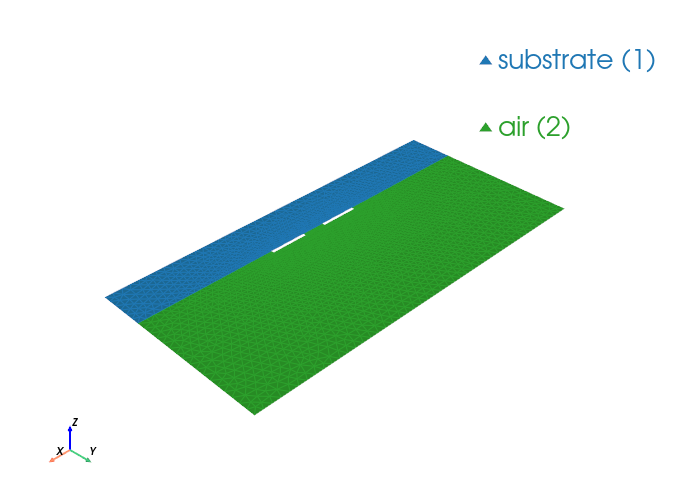

Differential Microstrip Modes#
This notebook builds a boxed differential microstrip cross-section (substrate + air + ground plane + two PEC strips), solves eigenmodes, and plots the first fields.
from palacetoolkit.mode_solver import WaveguideModeSolver, ModeMetrics
from palacetoolkit.utils import write_and_finalize_gmsh
from palacetoolkit.viz import view_mesh
import gmsh
import numpy as np
def make_differential_microstrip_mesh(
box_w=8.0,
h_sub=1.0,
h_air=3.0,
strip_w=0.8,
strip_gap=0.5,
strip_t=0.06,
lc_bulk=0.18,
lc_strip=0.05,
filename=None,
):
gmsh.initialize()
gmsh.option.setNumber("General.Verbosity", 0)
gmsh.model.add("differential_microstrip_modes")
sub = gmsh.model.occ.addRectangle(-box_w / 2, -h_sub, 0, box_w, h_sub)
air = gmsh.model.occ.addRectangle(-box_w / 2, 0.0, 0, box_w, h_air)
x1 = -(strip_gap / 2 + strip_w)
x2 = strip_gap / 2
strip_p = gmsh.model.occ.addRectangle(x1, 0.0, 0, strip_w, strip_t)
strip_n = gmsh.model.occ.addRectangle(x2, 0.0, 0, strip_w, strip_t)
_, outmap = gmsh.model.occ.fragment([(2, sub), (2, air), (2, strip_p), (2, strip_n)], [])
gmsh.model.occ.remove(list(outmap[2]) + list(outmap[3]), recursive=True)
gmsh.model.occ.synchronize()
all_surfs = [t for _, t in gmsh.model.getEntities(2)]
substrate_surfs = []
air_surfs = []
for tag in all_surfs:
_, cy, _ = gmsh.model.occ.getCenterOfMass(2, tag)
if cy < -1e-9:
substrate_surfs.append(tag)
else:
air_surfs.append(tag)
gmsh.model.addPhysicalGroup(2, substrate_surfs, tag=1, name="substrate")
gmsh.model.addPhysicalGroup(2, air_surfs, tag=2, name="air")
bnd = gmsh.model.getBoundary([(2, t) for t in substrate_surfs + air_surfs], oriented=False, combined=False)
edge_tags = sorted({abs(t) for _, t in bnd})
strip_p_edges = []
strip_n_edges = []
ground_edges = []
open_edges = []
c1 = x1 + strip_w / 2
c2 = x2 + strip_w / 2
for et in edge_tags:
ex, ey, _ = gmsh.model.occ.getCenterOfMass(1, et)
on_strip_y = (-1e-6 <= ey <= strip_t + 1e-6)
if on_strip_y and abs(ex - c1) <= strip_w / 2 + 1e-6:
strip_p_edges.append(et)
elif on_strip_y and abs(ex - c2) <= strip_w / 2 + 1e-6:
strip_n_edges.append(et)
elif abs(ey + h_sub) <= 1e-6:
ground_edges.append(et)
else:
open_edges.append(et)
if ground_edges:
gmsh.model.addPhysicalGroup(1, ground_edges, tag=1, name="ground_plane")
if strip_p_edges:
gmsh.model.addPhysicalGroup(1, strip_p_edges, tag=2, name="strip_p")
if strip_n_edges:
gmsh.model.addPhysicalGroup(1, strip_n_edges, tag=3, name="strip_n")
if open_edges:
gmsh.model.addPhysicalGroup(1, open_edges, tag=4, name="open_boundary")
for _, ptag in gmsh.model.getEntities(0):
x, y, _ = gmsh.model.getValue(0, ptag, [])
near_pair = (abs(x) <= (strip_gap / 2 + strip_w + 0.8) and -0.1 <= y <= strip_t + 0.5)
gmsh.model.mesh.setSize([(0, ptag)], lc_strip if near_pair else lc_bulk)
gmsh.model.mesh.generate(2)
return write_and_finalize_gmsh(filename, prefix="wg_diffms_")
eps_sub = 4.0
eps_air = 1.0
mu_r = 1.0
omega = 16.0
mesh_file = make_differential_microstrip_mesh(
box_w=8.0,
h_sub=1.0,
h_air=3.0,
strip_w=0.8,
strip_gap=0.5,
strip_t=0.06,
)
view_mesh(mesh_file)
# Ground and both strips are PEC; top/sides remain non-PEC.
pec_bdr = [1, 2, 3]
solver = WaveguideModeSolver(
mesh_file=mesh_file,
order=2,
pec_bdr=pec_bdr,
materials=[
{"attrs": [1], "eps_r": eps_sub, "mu_r": mu_r},
{"attrs": [2], "eps_r": eps_air, "mu_r": mu_r},
],
omega=omega,
)
results = solver.solve(num_modes=8, mode_idx=1, target=0.0, save=0, num_procs=4)
print("Computed differential microstrip modes:")
for i in sorted(results):
kn = results[i].k_n
print(f" Mode {i:2d}: kn={kn.real:+10.6f}{kn.imag:+10.6f}j")
Loading mesh file: /tmp/wg_diffms_oyygeu2e.msh
Groups to render transparent: ['air_none', 'air_plastic_enclosure']
Mesh loaded successfully with 2 cell blocks
Found 5826 triangles total
Physical group tags in mesh: {1: 'substrate', 2: 'air'}

Running: /home/martin/.cache/palacetoolkit/runtime/palace-cpu-v0.17.0/bin/palace --serial /tmp/wg_diffms_oyygeu2e_modes/config.json
>> /home/martin/.cache/palacetoolkit/runtime/palace-cpu-v0.17.0/bin/palace-x86_64.bin /tmp/wg_diffms_oyygeu2e_modes/config.json
_____________ _______
_____ __ \____ __ /____ ____________
____ /_/ / __ ` / / __ ` / ___/ _ \
___ _____/ /_/ / / /_/ / /__/ ___/
/__/ \___,__/__/\___,__/\_____\_____/
Git changeset ID: v0.17.0-194-g01f5d9bd1
Running with 1 MPI process, 1 OpenMP thread
Device configuration: omp,cpu
Memory configuration: host-std
libCEED backend: /cpu/self/xsmm/blocked
--> Warning!
One or more external boundary attributes has no associated boundary condition!
"PMC"/"ZeroCharge" condition is assumed!
Boundary attribute list: 4
Characteristic length and time scales:
Lc = 8.000e+00 m, tc = 2.669e+01 ns
Finished partitioning mesh into 1 subdomain
Mesh curvature order: 1
Mesh bounding box:
(Xmin, Ymin) = (-4.000e+00, -1.000e+00) m
(Xmax, Ymax) = (+4.000e+00, +3.000e+00) m
Parallel Mesh Stats:
minimum average maximum total
vertices 3016 3016 3016 3016
edges 8843 8843 8843 8843
elements 5826 5826 5826 5826
neighbors 0 0 0
minimum maximum
h 0.003452 0.026072
kappa 1 2.16017
Estimated current per-rank memory usage is: Min. 54.0M, Max. 54.0M, Avg. 54.0M, Total 54.0M
Estimated current per-node memory usage is: Min. 54.0M, Max. 54.0M, Avg. 54.0M, Total 54.0M
Configuring 2D waveguide mode analysis at f = 7.639e-01 GHz (omega = 1.280886e+02)
ND space: 29338 DOFs, H1 space: 11859 DOFs, total: 41197
Auto kn_target = 2.686809e+02 (from max(mu_r) * max(epsilon_r) = 4.000000e+00)
Solving GEP for 8 propagation mode(s)...
Residual norms for GMRES solve
0 (restart 0) KSP residual norm 1.088364e-01
1 (restart 0) KSP residual norm 1.057448e-12
GMRES solver converged in 1 iteration (avg. reduction factor: 9.716e-12)
Residual norms for GMRES solve
0 (restart 0) KSP residual norm 5.685008e-03
1 (restart 0) KSP residual norm 5.923799e-14
GMRES solver converged in 1 iteration (avg. reduction factor: 1.042e-11)
Residual norms for GMRES solve
0 (restart 0) KSP residual norm 9.813401e-03
1 (restart 0) KSP residual norm 9.065954e-14
GMRES solver converged in 1 iteration (avg. reduction factor: 9.238e-12)
Residual norms for GMRES solve
0 (restart 0) KSP residual norm 8.209174e-03
1 (restart 0) KSP residual norm 7.593204e-14
GMRES solver converged in 1 iteration (avg. reduction factor: 9.250e-12)
Residual norms for GMRES solve
0 (restart 0) KSP residual norm 1.023241e-02
1 (restart 0) KSP residual norm 1.340666e-13
GMRES solver converged in 1 iteration (avg. reduction factor: 1.310e-11)
Residual norms for GMRES solve
0 (restart 0) KSP residual norm 7.968402e-03
1 (restart 0) KSP residual norm 3.448584e-14
GMRES solver converged in 1 iteration (avg. reduction factor: 4.328e-12)
Residual norms for GMRES solve
0 (restart 0) KSP residual norm 9.023687e-03
1 (restart 0) KSP residual norm 8.686022e-14
GMRES solver converged in 1 iteration (avg. reduction factor: 9.626e-12)
Residual norms for GMRES solve
0 (restart 0) KSP residual norm 5.795438e-03
1 (restart 0) KSP residual norm 4.898632e-14
GMRES solver converged in 1 iteration (avg. reduction factor: 8.453e-12)
Residual norms for GMRES solve
0 (restart 0) KSP residual norm 1.727597e-03
1 (restart 0) KSP residual norm 1.049995e-14
GMRES solver converged in 1 iteration (avg. reduction factor: 6.078e-12)
Residual norms for GMRES solve
0 (restart 0) KSP residual norm 2.341111e-03
1 (restart 0) KSP residual norm 1.053706e-14
GMRES solver converged in 1 iteration (avg. reduction factor: 4.501e-12)
Residual norms for GMRES solve
0 (restart 0) KSP residual norm 1.171952e-03
1 (restart 0) KSP residual norm 5.807309e-15
GMRES solver converged in 1 iteration (avg. reduction factor: 4.955e-12)
Residual norms for GMRES solve
0 (restart 0) KSP residual norm 1.354116e-03
1 (restart 0) KSP residual norm 9.002139e-15
GMRES solver converged in 1 iteration (avg. reduction factor: 6.648e-12)
Residual norms for GMRES solve
0 (restart 0) KSP residual norm 6.026614e-04
1 (restart 0) KSP residual norm 9.591385e-15
GMRES solver converged in 1 iteration (avg. reduction factor: 1.592e-11)
Residual norms for GMRES solve
0 (restart 0) KSP residual norm 1.440658e-03
1 (restart 0) KSP residual norm 2.265304e-14
GMRES solver converged in 1 iteration (avg. reduction factor: 1.572e-11)
Residual norms for GMRES solve
0 (restart 0) KSP residual norm 8.486959e-04
1 (restart 0) KSP residual norm 7.509155e-15
GMRES solver converged in 1 iteration (avg. reduction factor: 8.848e-12)
Residual norms for GMRES solve
0 (restart 0) KSP residual norm 1.307377e-03
1 (restart 0) KSP residual norm 1.823863e-14
GMRES solver converged in 1 iteration (avg. reduction factor: 1.395e-11)
Residual norms for GMRES solve
0 (restart 0) KSP residual norm 1.436604e-03
1 (restart 0) KSP residual norm 2.100550e-14
GMRES solver converged in 1 iteration (avg. reduction factor: 1.462e-11)
Residual norms for GMRES solve
0 (restart 0) KSP residual norm 2.660807e-03
1 (restart 0) KSP residual norm 2.237252e-14
GMRES solver converged in 1 iteration (avg. reduction factor: 8.408e-12)
Residual norms for GMRES solve
0 (restart 0) KSP residual norm 2.632452e-03
1 (restart 0) KSP residual norm 3.376406e-14
GMRES solver converged in 1 iteration (avg. reduction factor: 1.283e-11)
Residual norms for GMRES solve
0 (restart 0) KSP residual norm 1.225459e-03
1 (restart 0) KSP residual norm 2.051210e-14
GMRES solver converged in 1 iteration (avg. reduction factor: 1.674e-11)
Residual norms for GMRES solve
0 (restart 0) KSP residual norm 1.814157e-03
1 (restart 0) KSP residual norm 2.344969e-14
GMRES solver converged in 1 iteration (avg. reduction factor: 1.293e-11)
Residual norms for GMRES solve
0 (restart 0) KSP residual norm 2.703417e-03
1 (restart 0) KSP residual norm 3.724891e-14
GMRES solver converged in 1 iteration (avg. reduction factor: 1.378e-11)
Residual norms for GMRES solve
0 (restart 0) KSP residual norm 2.041051e-03
1 (restart 0) KSP residual norm 3.106138e-14
GMRES solver converged in 1 iteration (avg. reduction factor: 1.522e-11)
Residual norms for GMRES solve
0 (restart 0) KSP residual norm 2.273776e-03
1 (restart 0) KSP residual norm 2.767089e-14
GMRES solver converged in 1 iteration (avg. reduction factor: 1.217e-11)
Residual norms for GMRES solve
0 (restart 0) KSP residual norm 6.013579e-04
1 (restart 0) KSP residual norm 3.924135e-15
GMRES solver converged in 1 iteration (avg. reduction factor: 6.525e-12)
Residual norms for GMRES solve
0 (restart 0) KSP residual norm 1.225467e-03
1 (restart 0) KSP residual norm 1.007270e-14
GMRES solver converged in 1 iteration (avg. reduction factor: 8.219e-12)
Residual norms for GMRES solve
0 (restart 0) KSP residual norm 1.312400e-03
1 (restart 0) KSP residual norm 1.120090e-14
GMRES solver converged in 1 iteration (avg. reduction factor: 8.535e-12)
Residual norms for GMRES solve
0 (restart 0) KSP residual norm 1.933692e-04
1 (restart 0) KSP residual norm 6.866541e-15
GMRES solver converged in 1 iteration (avg. reduction factor: 3.551e-11)
Residual norms for GMRES solve
0 (restart 0) KSP residual norm 8.439139e-04
1 (restart 0) KSP residual norm 9.559151e-16
GMRES solver converged in 1 iteration (avg. reduction factor: 1.133e-12)
Residual norms for GMRES solve
0 (restart 0) KSP residual norm 3.197447e-04
1 (restart 0) KSP residual norm 8.605641e-15
GMRES solver converged in 1 iteration (avg. reduction factor: 2.691e-11)
Residual norms for GMRES solve
0 (restart 0) KSP residual norm 6.128923e-04
1 (restart 0) KSP residual norm 2.395278e-14
GMRES solver converged in 1 iteration (avg. reduction factor: 3.908e-11)
Residual norms for GMRES solve
0 (restart 0) KSP residual norm 3.486589e-04
1 (restart 0) KSP residual norm 1.447742e-14
GMRES solver converged in 1 iteration (avg. reduction factor: 4.152e-11)
Residual norms for GMRES solve
0 (restart 0) KSP residual norm 5.069319e-04
1 (restart 0) KSP residual norm 9.366047e-15
GMRES solver converged in 1 iteration (avg. reduction factor: 1.848e-11)
Residual norms for GMRES solve
0 (restart 0) KSP residual norm 3.450273e-04
1 (restart 0) KSP residual norm 5.684568e-15
GMRES solver converged in 1 iteration (avg. reduction factor: 1.648e-11)
Residual norms for GMRES solve
0 (restart 0) KSP residual norm 4.283564e-04
1 (restart 0) KSP residual norm 1.071643e-14
GMRES solver converged in 1 iteration (avg. reduction factor: 2.502e-11)
Residual norms for GMRES solve
0 (restart 0) KSP residual norm 4.489377e-04
1 (restart 0) KSP residual norm 1.099634e-14
GMRES solver converged in 1 iteration (avg. reduction factor: 2.449e-11)
Residual norms for GMRES solve
0 (restart 0) KSP residual norm 1.133939e-04
1 (restart 0) KSP residual norm 6.652838e-15
GMRES solver converged in 1 iteration (avg. reduction factor: 5.867e-11)
Residual norms for GMRES solve
0 (restart 0) KSP residual norm 2.811841e-04
1 (restart 0) KSP residual norm 1.083210e-14
GMRES solver converged in 1 iteration (avg. reduction factor: 3.852e-11)
Residual norms for GMRES solve
0 (restart 0) KSP residual norm 1.660016e-04
1 (restart 0) KSP residual norm 1.676355e-14
GMRES solver converged in 1 iteration (avg. reduction factor: 1.010e-10)
Residual norms for GMRES solve
0 (restart 0) KSP residual norm 9.353758e-05
1 (restart 0) KSP residual norm 6.817871e-15
GMRES solver converged in 1 iteration (avg. reduction factor: 7.289e-11)
Residual norms for GMRES solve
0 (restart 0) KSP residual norm 1.159493e-04
1 (restart 0) KSP residual norm 1.879174e-14
GMRES solver converged in 1 iteration (avg. reduction factor: 1.621e-10)
Residual norms for GMRES solve
0 (restart 0) KSP residual norm 1.199073e-04
1 (restart 0) KSP residual norm 2.327192e-14
GMRES solver converged in 1 iteration (avg. reduction factor: 1.941e-10)
Residual norms for GMRES solve
0 (restart 0) KSP residual norm 8.677250e-05
1 (restart 0) KSP residual norm 7.279866e-15
GMRES solver converged in 1 iteration (avg. reduction factor: 8.390e-11)
Residual norms for GMRES solve
0 (restart 0) KSP residual norm 9.461089e-05
1 (restart 0) KSP residual norm 5.691503e-15
GMRES solver converged in 1 iteration (avg. reduction factor: 6.016e-11)
Residual norms for GMRES solve
0 (restart 0) KSP residual norm 9.770092e-05
1 (restart 0) KSP residual norm 7.858359e-15
GMRES solver converged in 1 iteration (avg. reduction factor: 8.043e-11)
Residual norms for GMRES solve
0 (restart 0) KSP residual norm 9.586863e-05
1 (restart 0) KSP residual norm 1.090191e-14
GMRES solver converged in 1 iteration (avg. reduction factor: 1.137e-10)
Residual norms for GMRES solve
0 (restart 0) KSP residual norm 9.640522e-05
1 (restart 0) KSP residual norm 2.415420e-14
GMRES solver converged in 1 iteration (avg. reduction factor: 2.505e-10)
Residual norms for GMRES solve
0 (restart 0) KSP residual norm 2.407181e-04
1 (restart 0) KSP residual norm 2.727164e-14
GMRES solver converged in 1 iteration (avg. reduction factor: 1.133e-10)
Residual norms for GMRES solve
0 (restart 0) KSP residual norm 8.100179e-05
1 (restart 0) KSP residual norm 9.615928e-15
GMRES solver converged in 1 iteration (avg. reduction factor: 1.187e-10)
Residual norms for GMRES solve
0 (restart 0) KSP residual norm 2.168383e-04
1 (restart 0) KSP residual norm 2.481754e-14
GMRES solver converged in 1 iteration (avg. reduction factor: 1.145e-10)
Residual norms for GMRES solve
0 (restart 0) KSP residual norm 9.275324e-05
1 (restart 0) KSP residual norm 2.323545e-14
GMRES solver converged in 1 iteration (avg. reduction factor: 2.505e-10)
Residual norms for GMRES solve
0 (restart 0) KSP residual norm 1.107876e-04
1 (restart 0) KSP residual norm 1.228089e-14
GMRES solver converged in 1 iteration (avg. reduction factor: 1.109e-10)
Residual norms for GMRES solve
0 (restart 0) KSP residual norm 9.170745e-05
1 (restart 0) KSP residual norm 9.894419e-16
GMRES solver converged in 1 iteration (avg. reduction factor: 1.079e-11)
Residual norms for GMRES solve
0 (restart 0) KSP residual norm 9.504654e-05
1 (restart 0) KSP residual norm 9.408094e-15
GMRES solver converged in 1 iteration (avg. reduction factor: 9.898e-11)
Residual norms for GMRES solve
0 (restart 0) KSP residual norm 8.240819e-05
1 (restart 0) KSP residual norm 1.398004e-14
GMRES solver converged in 1 iteration (avg. reduction factor: 1.696e-10)
Residual norms for GMRES solve
0 (restart 0) KSP residual norm 1.050161e-04
1 (restart 0) KSP residual norm 4.046445e-14
GMRES solver converged in 1 iteration (avg. reduction factor: 3.853e-10)
Residual norms for GMRES solve
0 (restart 0) KSP residual norm 1.069173e-04
1 (restart 0) KSP residual norm 2.654177e-14
GMRES solver converged in 1 iteration (avg. reduction factor: 2.482e-10)
Residual norms for GMRES solve
0 (restart 0) KSP residual norm 1.366095e-04
1 (restart 0) KSP residual norm 2.636229e-14
GMRES solver converged in 1 iteration (avg. reduction factor: 1.930e-10)
Residual norms for GMRES solve
0 (restart 0) KSP residual norm 2.547727e-04
1 (restart 0) KSP residual norm 3.160927e-14
GMRES solver converged in 1 iteration (avg. reduction factor: 1.241e-10)
Residual norms for GMRES solve
0 (restart 0) KSP residual norm 2.917720e-04
1 (restart 0) KSP residual norm 4.030574e-14
GMRES solver converged in 1 iteration (avg. reduction factor: 1.381e-10)
Residual norms for GMRES solve
0 (restart 0) KSP residual norm 5.551546e-05
1 (restart 0) KSP residual norm 1.108145e-14
GMRES solver converged in 1 iteration (avg. reduction factor: 1.996e-10)
Residual norms for GMRES solve
0 (restart 0) KSP residual norm 1.961368e-04
1 (restart 0) KSP residual norm 3.450393e-14
GMRES solver converged in 1 iteration (avg. reduction factor: 1.759e-10)
Residual norms for GMRES solve
0 (restart 0) KSP residual norm 9.232255e-05
1 (restart 0) KSP residual norm 3.884537e-14
GMRES solver converged in 1 iteration (avg. reduction factor: 4.208e-10)
Residual norms for GMRES solve
0 (restart 0) KSP residual norm 1.202992e-04
1 (restart 0) KSP residual norm 3.516714e-14
GMRES solver converged in 1 iteration (avg. reduction factor: 2.923e-10)
Residual norms for GMRES solve
0 (restart 0) KSP residual norm 8.488132e-05
1 (restart 0) KSP residual norm 2.508528e-14
GMRES solver converged in 1 iteration (avg. reduction factor: 2.955e-10)
Residual norms for GMRES solve
0 (restart 0) KSP residual norm 1.152185e-04
1 (restart 0) KSP residual norm 3.603465e-14
GMRES solver converged in 1 iteration (avg. reduction factor: 3.128e-10)
Residual norms for GMRES solve
0 (restart 0) KSP residual norm 9.074978e-05
1 (restart 0) KSP residual norm 3.968854e-14
GMRES solver converged in 1 iteration (avg. reduction factor: 4.373e-10)
Residual norms for GMRES solve
0 (restart 0) KSP residual norm 1.096270e-04
1 (restart 0) KSP residual norm 4.508562e-14
GMRES solver converged in 1 iteration (avg. reduction factor: 4.113e-10)
Residual norms for GMRES solve
0 (restart 0) KSP residual norm 8.965179e-05
1 (restart 0) KSP residual norm 6.746055e-14
GMRES solver converged in 1 iteration (avg. reduction factor: 7.525e-10)
Residual norms for GMRES solve
0 (restart 0) KSP residual norm 1.099989e-04
1 (restart 0) KSP residual norm 6.925234e-14
GMRES solver converged in 1 iteration (avg. reduction factor: 6.296e-10)
Residual norms for GMRES solve
0 (restart 0) KSP residual norm 1.705788e-04
1 (restart 0) KSP residual norm 6.429244e-14
GMRES solver converged in 1 iteration (avg. reduction factor: 3.769e-10)
Residual norms for GMRES solve
0 (restart 0) KSP residual norm 2.534700e-04
1 (restart 0) KSP residual norm 6.379339e-14
GMRES solver converged in 1 iteration (avg. reduction factor: 2.517e-10)
Residual norms for GMRES solve
0 (restart 0) KSP residual norm 7.878533e-05
1 (restart 0) KSP residual norm 1.310992e-14
GMRES solver converged in 1 iteration (avg. reduction factor: 1.664e-10)
Residual norms for GMRES solve
0 (restart 0) KSP residual norm 2.515016e-04
1 (restart 0) KSP residual norm 3.260304e-14
GMRES solver converged in 1 iteration (avg. reduction factor: 1.296e-10)
Residual norms for GMRES solve
0 (restart 0) KSP residual norm 8.671827e-05
1 (restart 0) KSP residual norm 1.867384e-14
GMRES solver converged in 1 iteration (avg. reduction factor: 2.153e-10)
Residual norms for GMRES solve
0 (restart 0) KSP residual norm 1.046606e-04
1 (restart 0) KSP residual norm 1.038741e-14
GMRES solver converged in 1 iteration (avg. reduction factor: 9.925e-11)
Residual norms for GMRES solve
0 (restart 0) KSP residual norm 9.256156e-05
1 (restart 0) KSP residual norm 4.851667e-15
GMRES solver converged in 1 iteration (avg. reduction factor: 5.242e-11)
Residual norms for GMRES solve
0 (restart 0) KSP residual norm 1.203497e-04
1 (restart 0) KSP residual norm 2.738957e-14
GMRES solver converged in 1 iteration (avg. reduction factor: 2.276e-10)
Residual norms for GMRES solve
0 (restart 0) KSP residual norm 8.251496e-05
1 (restart 0) KSP residual norm 1.835081e-14
GMRES solver converged in 1 iteration (avg. reduction factor: 2.224e-10)
Residual norms for GMRES solve
0 (restart 0) KSP residual norm 1.308395e-04
1 (restart 0) KSP residual norm 1.307197e-14
GMRES solver converged in 1 iteration (avg. reduction factor: 9.991e-11)
Residual norms for GMRES solve
0 (restart 0) KSP residual norm 1.023857e-04
1 (restart 0) KSP residual norm 1.470549e-14
GMRES solver converged in 1 iteration (avg. reduction factor: 1.436e-10)
Residual norms for GMRES solve
0 (restart 0) KSP residual norm 1.508518e-04
1 (restart 0) KSP residual norm 2.292991e-14
GMRES solver converged in 1 iteration (avg. reduction factor: 1.520e-10)
Residual norms for GMRES solve
0 (restart 0) KSP residual norm 2.339324e-04
1 (restart 0) KSP residual norm 2.433975e-14
GMRES solver converged in 1 iteration (avg. reduction factor: 1.040e-10)
Residual norms for GMRES solve
0 (restart 0) KSP residual norm 6.816602e-05
1 (restart 0) KSP residual norm 8.239543e-15
GMRES solver converged in 1 iteration (avg. reduction factor: 1.209e-10)
Residual norms for GMRES solve
0 (restart 0) KSP residual norm 1.937770e-04
1 (restart 0) KSP residual norm 1.892050e-14
GMRES solver converged in 1 iteration (avg. reduction factor: 9.764e-11)
Residual norms for GMRES solve
0 (restart 0) KSP residual norm 7.655641e-05
1 (restart 0) KSP residual norm 9.150431e-15
GMRES solver converged in 1 iteration (avg. reduction factor: 1.195e-10)
Residual norms for GMRES solve
0 (restart 0) KSP residual norm 1.009874e-04
1 (restart 0) KSP residual norm 1.969877e-15
GMRES solver converged in 1 iteration (avg. reduction factor: 1.951e-11)
Residual norms for GMRES solve
0 (restart 0) KSP residual norm 7.677761e-05
1 (restart 0) KSP residual norm 8.512287e-15
GMRES solver converged in 1 iteration (avg. reduction factor: 1.109e-10)
Residual norms for GMRES solve
0 (restart 0) KSP residual norm 9.607073e-05
1 (restart 0) KSP residual norm 1.800862e-14
GMRES solver converged in 1 iteration (avg. reduction factor: 1.875e-10)
Residual norms for GMRES solve
0 (restart 0) KSP residual norm 1.036851e-04
1 (restart 0) KSP residual norm 2.109674e-14
GMRES solver converged in 1 iteration (avg. reduction factor: 2.035e-10)
Residual norms for GMRES solve
0 (restart 0) KSP residual norm 1.040499e-04
1 (restart 0) KSP residual norm 2.532076e-14
GMRES solver converged in 1 iteration (avg. reduction factor: 2.434e-10)
Residual norms for GMRES solve
0 (restart 0) KSP residual norm 1.107591e-04
1 (restart 0) KSP residual norm 1.459142e-14
GMRES solver converged in 1 iteration (avg. reduction factor: 1.317e-10)
Residual norms for GMRES solve
0 (restart 0) KSP residual norm 1.953242e-04
1 (restart 0) KSP residual norm 3.878125e-14
GMRES solver converged in 1 iteration (avg. reduction factor: 1.985e-10)
Residual norms for GMRES solve
0 (restart 0) KSP residual norm 6.769770e-05
1 (restart 0) KSP residual norm 6.044702e-15
GMRES solver converged in 1 iteration (avg. reduction factor: 8.929e-11)
Residual norms for GMRES solve
0 (restart 0) KSP residual norm 1.774365e-04
1 (restart 0) KSP residual norm 3.663812e-14
GMRES solver converged in 1 iteration (avg. reduction factor: 2.065e-10)
Residual norms for GMRES solve
0 (restart 0) KSP residual norm 9.358073e-05
1 (restart 0) KSP residual norm 2.913208e-14
GMRES solver converged in 1 iteration (avg. reduction factor: 3.113e-10)
Residual norms for GMRES solve
0 (restart 0) KSP residual norm 1.006120e-04
1 (restart 0) KSP residual norm 1.125884e-14
GMRES solver converged in 1 iteration (avg. reduction factor: 1.119e-10)
Residual norms for GMRES solve
0 (restart 0) KSP residual norm 9.695960e-05
1 (restart 0) KSP residual norm 2.009039e-14
GMRES solver converged in 1 iteration (avg. reduction factor: 2.072e-10)
Residual norms for GMRES solve
0 (restart 0) KSP residual norm 8.967297e-05
1 (restart 0) KSP residual norm 1.853346e-14
GMRES solver converged in 1 iteration (avg. reduction factor: 2.067e-10)
Residual norms for GMRES solve
0 (restart 0) KSP residual norm 9.359673e-05
1 (restart 0) KSP residual norm 2.349406e-14
GMRES solver converged in 1 iteration (avg. reduction factor: 2.510e-10)
Residual norms for GMRES solve
0 (restart 0) KSP residual norm 9.458354e-05
1 (restart 0) KSP residual norm 2.065996e-14
GMRES solver converged in 1 iteration (avg. reduction factor: 2.184e-10)
Residual norms for GMRES solve
0 (restart 0) KSP residual norm 1.423877e-04
1 (restart 0) KSP residual norm 1.903936e-14
GMRES solver converged in 1 iteration (avg. reduction factor: 1.337e-10)
Residual norms for GMRES solve
0 (restart 0) KSP residual norm 7.594554e-05
1 (restart 0) KSP residual norm 4.503679e-15
GMRES solver converged in 1 iteration (avg. reduction factor: 5.930e-11)
Residual norms for GMRES solve
0 (restart 0) KSP residual norm 1.445135e-04
1 (restart 0) KSP residual norm 1.733802e-14
GMRES solver converged in 1 iteration (avg. reduction factor: 1.200e-10)
Residual norms for GMRES solve
0 (restart 0) KSP residual norm 1.068099e-04
1 (restart 0) KSP residual norm 2.008271e-14
GMRES solver converged in 1 iteration (avg. reduction factor: 1.880e-10)
Residual norms for GMRES solve
0 (restart 0) KSP residual norm 9.591917e-05
1 (restart 0) KSP residual norm 2.520378e-14
GMRES solver converged in 1 iteration (avg. reduction factor: 2.628e-10)
Residual norms for GMRES solve
0 (restart 0) KSP residual norm 8.837073e-05
1 (restart 0) KSP residual norm 1.949305e-14
GMRES solver converged in 1 iteration (avg. reduction factor: 2.206e-10)
Residual norms for GMRES solve
0 (restart 0) KSP residual norm 9.700028e-05
1 (restart 0) KSP residual norm 4.876095e-14
GMRES solver converged in 1 iteration (avg. reduction factor: 5.027e-10)
Residual norms for GMRES solve
0 (restart 0) KSP residual norm 8.276339e-05
1 (restart 0) KSP residual norm 4.418520e-14
GMRES solver converged in 1 iteration (avg. reduction factor: 5.339e-10)
Residual norms for GMRES solve
0 (restart 0) KSP residual norm 1.245609e-04
1 (restart 0) KSP residual norm 3.385633e-14
GMRES solver converged in 1 iteration (avg. reduction factor: 2.718e-10)
Residual norms for GMRES solve
0 (restart 0) KSP residual norm 3.063464e-04
1 (restart 0) KSP residual norm 2.119235e-14
GMRES solver converged in 1 iteration (avg. reduction factor: 6.918e-11)
Residual norms for GMRES solve
0 (restart 0) KSP residual norm 6.454319e-05
1 (restart 0) KSP residual norm 6.546494e-15
GMRES solver converged in 1 iteration (avg. reduction factor: 1.014e-10)
Residual norms for GMRES solve
0 (restart 0) KSP residual norm 2.323007e-04
1 (restart 0) KSP residual norm 2.842927e-14
GMRES solver converged in 1 iteration (avg. reduction factor: 1.224e-10)
Residual norms for GMRES solve
0 (restart 0) KSP residual norm 9.606931e-05
1 (restart 0) KSP residual norm 2.998878e-14
GMRES solver converged in 1 iteration (avg. reduction factor: 3.122e-10)
Residual norms for GMRES solve
0 (restart 0) KSP residual norm 1.135330e-04
1 (restart 0) KSP residual norm 2.490585e-14
GMRES solver converged in 1 iteration (avg. reduction factor: 2.194e-10)
Residual norms for GMRES solve
0 (restart 0) KSP residual norm 1.260276e-04
1 (restart 0) KSP residual norm 8.364139e-15
GMRES solver converged in 1 iteration (avg. reduction factor: 6.637e-11)
Residual norms for GMRES solve
0 (restart 0) KSP residual norm 8.992643e-05
1 (restart 0) KSP residual norm 2.730015e-14
GMRES solver converged in 1 iteration (avg. reduction factor: 3.036e-10)
Residual norms for GMRES solve
0 (restart 0) KSP residual norm 1.781139e-04
1 (restart 0) KSP residual norm 2.994913e-14
GMRES solver converged in 1 iteration (avg. reduction factor: 1.681e-10)
Residual norms for GMRES solve
0 (restart 0) KSP residual norm 1.046534e-04
1 (restart 0) KSP residual norm 1.924447e-14
GMRES solver converged in 1 iteration (avg. reduction factor: 1.839e-10)
Residual norms for GMRES solve
0 (restart 0) KSP residual norm 6.972532e-05
1 (restart 0) KSP residual norm 1.037333e-14
GMRES solver converged in 1 iteration (avg. reduction factor: 1.488e-10)
Residual norms for GMRES solve
0 (restart 0) KSP residual norm 9.958399e-05
1 (restart 0) KSP residual norm 2.032675e-14
GMRES solver converged in 1 iteration (avg. reduction factor: 2.041e-10)
Residual norms for GMRES solve
0 (restart 0) KSP residual norm 8.493220e-05
1 (restart 0) KSP residual norm 4.025715e-16
GMRES solver converged in 1 iteration (avg. reduction factor: 4.740e-12)
Residual norms for GMRES solve
0 (restart 0) KSP residual norm 7.967210e-05
1 (restart 0) KSP residual norm 2.055351e-14
GMRES solver converged in 1 iteration (avg. reduction factor: 2.580e-10)
Residual norms for GMRES solve
0 (restart 0) KSP residual norm 8.710727e-05
1 (restart 0) KSP residual norm 3.227134e-14
GMRES solver converged in 1 iteration (avg. reduction factor: 3.705e-10)
Residual norms for GMRES solve
0 (restart 0) KSP residual norm 7.930938e-05
1 (restart 0) KSP residual norm 2.299432e-14
GMRES solver converged in 1 iteration (avg. reduction factor: 2.899e-10)
Residual norms for GMRES solve
0 (restart 0) KSP residual norm 9.914606e-05
1 (restart 0) KSP residual norm 2.536730e-14
GMRES solver converged in 1 iteration (avg. reduction factor: 2.559e-10)
Residual norms for GMRES solve
0 (restart 0) KSP residual norm 1.436524e-04
1 (restart 0) KSP residual norm 3.639788e-14
GMRES solver converged in 1 iteration (avg. reduction factor: 2.534e-10)
Residual norms for GMRES solve
0 (restart 0) KSP residual norm 7.497969e-05
1 (restart 0) KSP residual norm 4.705547e-15
GMRES solver converged in 1 iteration (avg. reduction factor: 6.276e-11)
Residual norms for GMRES solve
0 (restart 0) KSP residual norm 1.408716e-04
1 (restart 0) KSP residual norm 1.967739e-14
GMRES solver converged in 1 iteration (avg. reduction factor: 1.397e-10)
Residual norms for GMRES solve
0 (restart 0) KSP residual norm 1.056343e-04
1 (restart 0) KSP residual norm 4.369313e-15
GMRES solver converged in 1 iteration (avg. reduction factor: 4.136e-11)
Residual norms for GMRES solve
0 (restart 0) KSP residual norm 8.669148e-05
1 (restart 0) KSP residual norm 1.731308e-14
GMRES solver converged in 1 iteration (avg. reduction factor: 1.997e-10)
Residual norms for GMRES solve
0 (restart 0) KSP residual norm 9.372570e-05
1 (restart 0) KSP residual norm 1.178106e-14
GMRES solver converged in 1 iteration (avg. reduction factor: 1.257e-10)
Residual norms for GMRES solve
0 (restart 0) KSP residual norm 8.639282e-05
1 (restart 0) KSP residual norm 7.365468e-15
GMRES solver converged in 1 iteration (avg. reduction factor: 8.526e-11)
Residual norms for GMRES solve
0 (restart 0) KSP residual norm 1.501833e-04
1 (restart 0) KSP residual norm 2.365713e-14
GMRES solver converged in 1 iteration (avg. reduction factor: 1.575e-10)
Found 8 converged eigenvalues (sigma = -7.218945e+04)
eig 0: kn = 2.559608e+02-1.806622e-10i, n_eff = 1.998310e+00-1.410447e-12i
eig 1: kn = 2.558666e+02+9.385745e-09i, n_eff = 1.997575e+00+7.327540e-11i
eig 2: kn = 2.558326e+02-1.068329e-08i, n_eff = 1.997310e+00-8.340545e-11i
eig 3: kn = 2.557573e+02+4.177738e-10i, n_eff = 1.996722e+00+3.261600e-12i
eig 4: kn = 2.555874e+02-2.387020e-09i, n_eff = 1.995396e+00-1.863569e-11i
eig 5: kn = 2.554697e+02-2.275356e-10i, n_eff = 1.994476e+00-1.776392e-12i
eig 6: kn = 2.551943e+02+1.574730e-09i, n_eff = 1.992326e+00+1.229407e-11i
eig 7: kn = 2.550083e+02-2.417824e-09i, n_eff = 1.990874e+00-1.887618e-11i
Computing solution error estimates and performing postprocessing
m, Re{kn} (1/m), Im{kn} (1/m), Re{n_eff}, Im{n_eff}, Error (Bkwd.), Error (Abs.)
1, +3.199509e+01, -2.258278e-11, +1.998310e+00, -1.410447e-12, +2.732631e-13, +5.852930e-11
2, +3.198333e+01, +1.173218e-09, +1.997575e+00, +7.327540e-11, +6.307833e-13, +1.341430e-10
3, +3.197908e+01, -1.335411e-09, +1.997310e+00, -8.340545e-11, +1.049239e-12, +2.225598e-10
4, +3.196967e+01, +5.222172e-11, +1.996722e+00, +3.261600e-12, +1.803224e-13, +3.803311e-11
5, +3.194843e+01, -2.983775e-10, +1.995396e+00, -1.863569e-11, +5.227205e-13, +1.088641e-10
6, +3.193371e+01, -2.844195e-11, +1.994476e+00, -1.776392e-12, +1.275197e-13, +2.632849e-11
7, +3.189929e+01, +1.968413e-10, +1.992326e+00, +1.229407e-11, +5.437875e-13, +1.100528e-10
8, +3.187604e+01, -3.022279e-10, +1.990874e+00, -1.887618e-11, +1.302644e-13, +2.601612e-11
Completed 0 iterations of adaptive mesh refinement (AMR):
Indicator norm = 5.024e-03, global unknowns = 41197
Max. iterations = 0, tol. = 1.000e-02
Estimated peak per-rank memory usage is: Min. 293.5M, Max. 293.5M, Avg. 293.5M, Total 293.5M
Estimated peak per-node memory usage is: Min. 293.5M, Max. 293.5M, Avg. 293.5M, Total 293.5M
Elapsed Time Report (s) Min. Max. Avg.
==============================================================
Initialization 0.024 0.024 0.024
Mesh Preprocessing 0.084 0.084 0.084
Operator Construction 0.212 0.212 0.212
Preconditioner 9.752 9.752 9.752
Eigenvalue Solve 2.253 2.253 2.253
Estimation 0.052 0.052 0.052
Construction 0.289 0.289 0.289
Solve 1.379 1.379 1.379
Postprocessing 2.750 2.750 2.750
Disk IO 0.010 0.010 0.010
--------------------------------------------------------------
Total 17.748 17.748 17.748
Peak Memory Per-Node Total Total HWM
==============================================================
Initialization 2.2M 2.2M 2.2M
Mesh Preprocessing 3.0M 3.0M 5.1M
Operator Construction 36.0M 36.0M 41.2M
Preconditioner 146.8M 146.8M 188.0M
Eigenvalue Solve 50.4M 50.4M 238.4M
Estimation 0.0K 0.0K 238.4M
Construction 7.1M 7.1M 245.5M
Solve 0.0K 0.0K 245.5M
Postprocessing 0.0K 0.0K 245.5M
Disk IO 3.0M 3.0M 248.5M
--------------------------------------------------------------
Total 269.3M 269.3M 269.3M
Computed differential microstrip modes:
Mode 1: kn=+31.995094 -0.000000j
# Mesh visualization moved to pyvista-based VTU post-processing.
# For more details, see palacetoolkit.postpro_vtu utilities.
print("Mesh visualization moved to pyvista-based VTU post-processing.")
Mesh visualization moved to pyvista-based VTU post-processing.
# Field visualization is no longer available through the solver.
# Palace writes VTU field output files when save > 0 in solver.solve().
# Load the VTU files with pyvista for field visualization.
# For more details, see palacetoolkit.postpro_vtu utilities.
print("Field visualization moved to pyvista-based VTU post-processing.")
Field visualization moved to pyvista-based VTU post-processing.